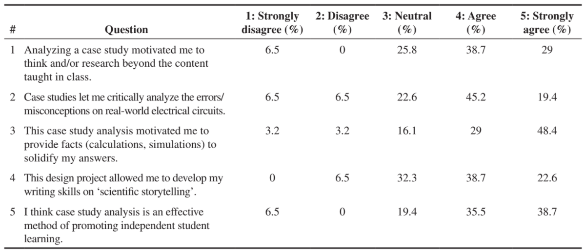
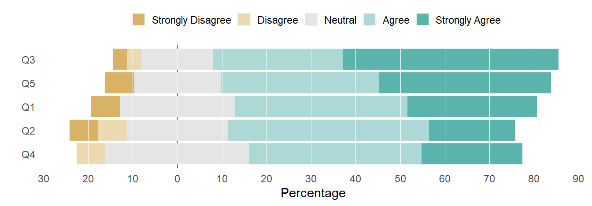
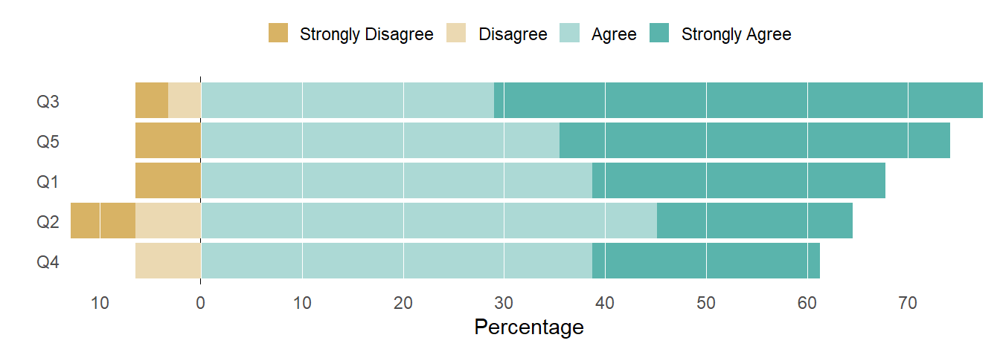
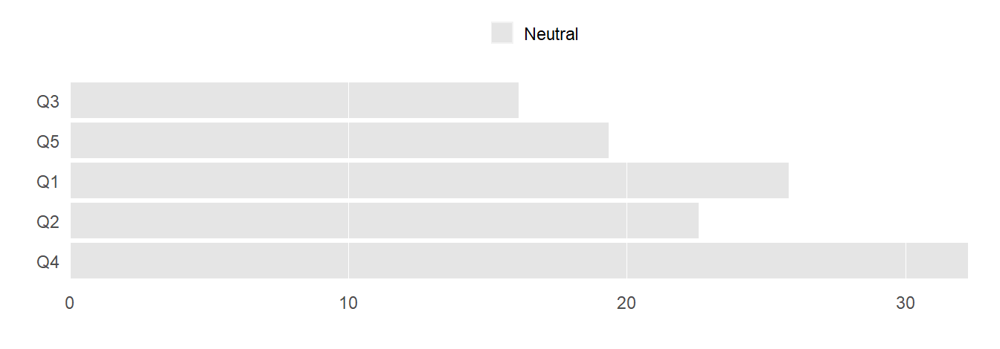
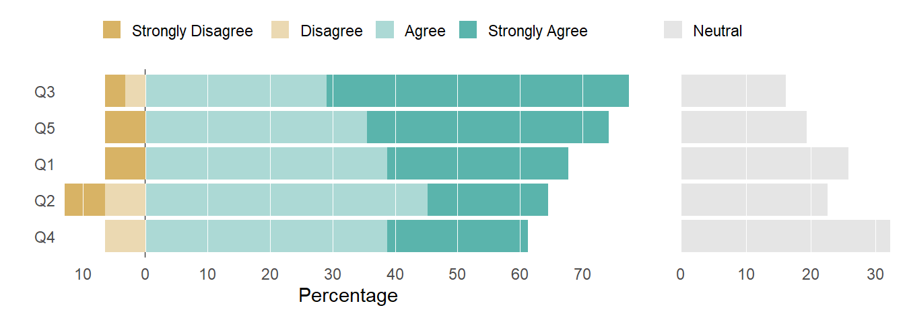
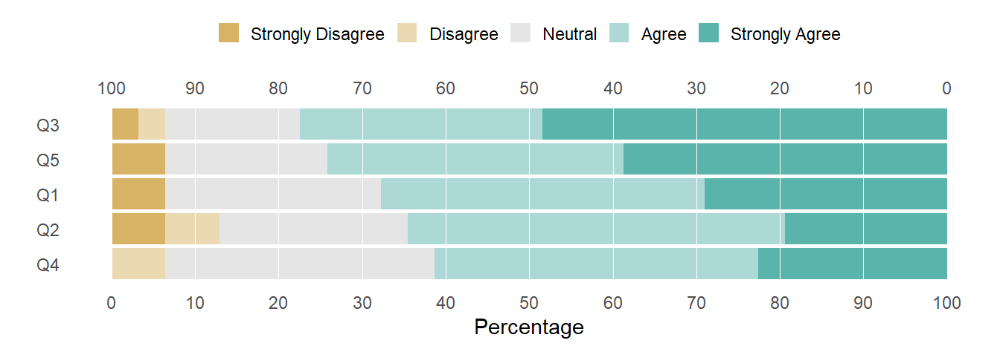
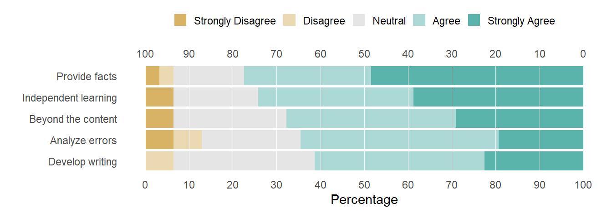

Comparing chart designs for displaying Likert-style survey results and concluding that the 100% stacked-bar chart is the most effective.
Author
Richard Layton
Published
2022-02-12
Summary
I reconstruct three alternative chart designs for Likert-style survey data from a 2018 post by Lisa Charlotte Muth and Gregor Aisch and share the source data and my R code. Comparing the charts in light of their arguments, I agree that the 100% stacked-bar chart is the more effective of the three designs.
For a recent presentation, I needed to graph the results of a Likert-style survey.
In the past I tended to use the diverging stacked-bar design by Robbins and Heiberger (2014; 2011). Browsing for alternatives, I found the essays by Stephen Few (2016) and Lisa Charlotte Muth and Gregor Aisch (2018) to be well-reasoned and useful.
In this post, I reconstruct the three chart designs from Muth and Aisch with two goals in mind: to reproduce and comment on the comparisons they make using a data set of my choosing; and to share the source data and my R code.
Here, however, I do not discuss the R code in any detail. In a companion post, I focus on R for preparing different forms of source data for the likert package and editing the results for publication-ready charts.
I primarily use data.table, ggplot2, and likert R packages. An appealing feature of likert is its compatibility with data.table and ggplot2 functionality. Note that to reproduce this work, likert must be at least version 1.3.6.
The R code for the post is listed under the “R code” pointers.
The practice data in my example are from an engineering education article by Ashanthi Maxworth (2021), selected because the data are compact and the survey includes a Neutral option. The table from the original article is shown below. There were 31 respondents.

(Original Table 3) Percentage student responses for each question in the feedback form.
Survey data are most likely to be reported in one of three forms: summary percentages (as above), summary counts, or row-records. The likert() function accepts any of these forms as input. The practice data, in all three forms, are available in the blog data directory in CSV files, though for this post I will use the summary count form only.
Read the prepared data file in summary count form.
I rename the first column Item, and the data frame is ready to input to the likert() function. Because my goal is comparing chart designs, I’m not interested in the specific survey questions, so I leave the question labels in their abbreviated form (Q1, Q2, …).
R code
# rename first columnsetnames(dt, "q_no", "Item", skip_absent =TRUE)# examine the resultdt[]
The salient characteristics of the data frame are:
One row per question
First column is named Item and contains the question labels
Remaining columns are named for the opinion levels in increasing order left to right
Column values are the counts of respondents choosing that option
The sum of row counts is the number of respondents answering that question
Diverging stacked bars
A defining feature of the divergent stacked-bar is that the Neutral segment is split half to the left and half to the right of the zero reference line. Also, because each row of the data table sums to 100%, each bar of the chart has a horizontal length of 100%, partitioned to show the component percentages.
R code
# create the likert listlikert_list <-likert(summary = dt)# set scale limits to fill the data rectanglemy_limits <-c(-25, 86)# recode the opinion optionssetnames_opinion_labels(likert_list$results)# create the chartplot(likert_list, centered =TRUE, # diverginginclude.center =TRUE, # neutral includedplot.percent.low =FALSE,plot.percent.neutral =FALSE,plot.percent.high =FALSE) +# additional ggplot componentsscale_y_continuous(limits = my_limits, breaks = my_breaks, labels =abs(my_breaks)) + my_theme_elements + my_hline

Figure 1: Diverging stacked-bar design
The top-down row order is by decreasing agreement totals (Agree + Strongly Agree). In contrast, by Heiberger and Robbins’ definition, the row position of Q2 and Q4 would be swapped so that the maximum endpoint monotonically decreases top to bottom.
Describing a diverging stacked bar chart, Robbins and Heiberger say,
It is difficult to compare lengths without a common baseline. In this situation, we are primarily interested in the total percent to the right or left of the zero line; the breakdown into strongly or not is of lesser interest so that the primary comparisons do have a common baseline of zero (Robbins & Heiberger, 2011, p. 1060).
I agree—if we assume the Neutrals can treated as half positive and half negative. Muth and Aisch point out that we have no way of knowing that this is true. Because being truthful is a first principle of ethical data visualization, this assumption makes me uneasy. A lot depends on how the survey questions are worded and how the people surveyed interpret the Neutral response. In this specific case, I’m not certain the Neutrals can treated as half positive and half negative. Thus, the zero reference line does not establish a common baseline and we lose the ability to make effective visual comparisons.
We can recover the common baseline at zero by moving Neutral to a side chart of its own.
Neutral on the side
By removing the Neutral responses, the zero reference line is a common baseline for visually comparing total agreement. We can see that the top-down row order is by decreasing agreement totals (Agree + Strongly Agree). And for a given row, we can visually compare total disagreement to total agreement.
R code
# create the likert listlikert_list <-likert(summary = dt)# set scale limits to fill the data rectanglemy_limits <-c(-13, 78)# recode the opinion optionssetnames_opinion_labels(likert_list$results)# extract Neutrals for second chartlikert_list_neutral <- likert_list$results[, .(Item, Neutral)]# delete Neutrals from likert list (removing neutral from legend)likert_list$results[, Neutral :=NULL]likert_list$levels <- likert_list$levels[!likert_list$levels %in%"neutral"]likert_list$nlevels <- likert_list$nlevels -1# create the chartplot1 <-plot(likert_list, centered =TRUE, # divergingplot.percent.low =FALSE,plot.percent.neutral =FALSE,plot.percent.high =FALSE) +scale_y_continuous(limits = my_limits, breaks = my_breaks, labels =abs(my_breaks), expand =c(0, 0)) + my_theme_elements + my_hline# displayplot1

Figure 2: Diverging stacked bar, neutral omitted.
Next I construct the second part of the chart (using ggplot2 functions only) to plot the Neutral responses alone.
R code
# use Neutral data frame from earlierlikert_list <- likert_list_neutral# set scale limits to fill the data rectanglemy_limits <-c(0, 33)# extract order of questions (factors) from previous chart objectfactor_levels <-levels(plot1$data$Item)# factors for ordering rows likert_list[, Item :=factor(Item, levels = factor_levels)]# assign a variable to fill by and create a legendlikert_list[, opinion :="Neutral"]# create the chartplot2 <-ggplot(data = likert_list, mapping =aes(x = Neutral, y = Item, fill = opinion)) +geom_bar(stat ="identity") +labs(x ="", y ="") +scale_x_continuous(limits = my_limits, breaks = my_breaks, expand =c(0, 0)) +scale_fill_manual(values = neutral_color) + my_theme_elements + my_vline# displayplot2

Figure 3: Neutral responses only.
I combine the two charts and adjust their proportions to make equal scale divisions the same length.
R code
# edit Neutral bar chart aesthetics before combining plot2 <- plot2 +theme(axis.text.y =element_blank(), legend.justification =-0.25)# set plot proportions by trial and error until scales matchwidth_1 <-0.71width_2 <-1- width_1# combine plots ggdraw() +draw_plot(plot1, x =0 , y =0, width = width_1, height =1) +draw_plot(plot2, x = width_1, y =0, width = width_2, height =1)

Figure 4: Diverging stacked bar chart with neutral on the side.
Designed in this way, differences between positive and negative results now stand out a bit more, the sum of Agree and Strongly Agree are easier to read, and the Neutral values are both easier to read and compare (Few, 2016).
As Muth and Aisch point out, this design gives a good idea of the “competition” between agreement and disagreement. In this case, across all questions more than 60% of the respondents agreed and in all but one instance fewer than 10% disagreed.
In addition, between 15-30% responded Neutral. We don’t know if that means “I don’t know” or “I have no opinion” or “Sometimes I agree and sometimes I don’t”or “I’m tired of answering Likert-style surveys” or something else—which is a very good reason to graph Neutral on the side.
I like this design.
100% stacked bars
The final of the three designs is the 100% stacked bar—which until now I have not considered as effective as diverging stacked-bars at conveying survey results. What makes the difference today is Muth and Aisch’s suggestion to add a secondary scale along the top of the chart—a simple and elegant contribution.
R code
# create the likert listlikert_list <-likert(summary = dt)# set scale limitsmy_limits <-c(0, 100)# recode the opinion optionssetnames_opinion_labels(likert_list$results)# create the chartplot(likert_list, centered =FALSE, # 100% stacked barsinclude.center =TRUE, # include neutralplot.percent.low =FALSE,plot.percent.neutral =FALSE,plot.percent.high =FALSE) +scale_y_continuous(limits = my_limits, breaks = my_breaks, sec.axis =sec_axis( # second scaletrans =function(z) z -100, breaks = my_breaks, labels =as.character(abs(my_breaks)))) + my_theme_elements + my_hline

Figure 5: 100% stacked bar chart.
With the right boundary as a baseline, I read the top scale for agreement percentages; with the left boundary as a baseline, I read the bottom scale for disagreement percentages. We can easily quantify a comparison between strong opinions (outer left and outer right) or between total agreement and total disagreement. Neither of the divergent stacked-bar charts allow this level of direct visual access (though the bar segments could be directly labeled with their respective percentages).
Like the previous chart, the rationale for ordering the rows is clear—the agreement total monotonically increase from bottom to top. Of lesser importance, this design also immediately communicates that the bar segments are parts of a whole—that each bar represents 100% of responses.
The only disadvantage of this chart compared to the previous one is that the relative proportions of the Neutral responses are harder to compare. Neutrals are important data but the main story is usually a comparison between people who have opinions—that is, the bar segments to the left and right of the Neutral center.
I have to agree with Muth and Aisch—this is an effective design.
Back to the story
Were I to prepare this chart to accompany the original article, I might label the rows with shortened forms of the questions and cite the full questions in the text or in the data table. (Alternatively, likert() does have an argument to help manage longer question text.)
R code
dt_story <-copy(dt)# recode the opinion optionssetnames_opinion_labels(dt_story)# recode the question labelsdt_story[, Item := question_labels]# create the likert listlikert_list <-likert(summary = dt_story)# set scale limitsmy_limits <-c(0, 100)# create the chartplot(likert_list, centered =FALSE, include.center =TRUE, plot.percent.low =FALSE,plot.percent.neutral =FALSE,plot.percent.high =FALSE) +scale_y_continuous(limits = my_limits, breaks = my_breaks, sec.axis =sec_axis( # second scaletrans =function(z) z -100, breaks = my_breaks, labels =as.character(abs(my_breaks)))) + my_theme_elements + my_hline

Figure 6: Editing the legend key and question labels for readability.
As an example of the results discussion in the article, the “provide facts” paragraph states,
In the third feedback question, 24 out of 31 students (77.4%) agreed that the case study motivated them to provide facts such as calculations and simulations to support their answers. Unlike a typical textbook problem where there is a definite answer, making an argument in a case study requires thinking beyond the material delivered in class. Therefore, the use of additional calculations and especially simulations were needed to support the argument (Maxworth, 2021).
This is a perfectly straightforward description of the result and the chart supports the argument visually. In terms of the larger narrative, however, the chart provides a rationale for revising the narrative framework—instead of discussing the results in question order (Q1, Q2, …), discuss the results in order of level of agreement (highest to lowest), supported visually by the row order in the chart (top to bottom).
I think the chart provides evidence for an additional assertion: that the preponderance of responses are positive,
Between 61-77% of responses were positive over the full range of survey statements.
The largest negative response was to the Analyze errors/misconceptions assertion at 13% (4 out of 31 responses); all other negatives were at 6.5% (2 of 31).
Given the overall positive response, the small number of negatives may have resulted from a mismatch between a student and the case they selected. As the author states in their conclusion,
In future implementations, an effort is needed to balance the choice distribution of cases. This can be done by designing the cases with the same level of difficulty, familiarity, and applicability.
So while a chart was not necessary to support the author’s points, I think it would have added a small but important summary point that the case study approach was successful and warranted the further development outlined in the concluding section.
Additional software credits
likert for manipulating and plotting Likert-style data
Heiberger, R. M., & Robbins, N. B. (2014). Design of diverging stacked bar charts for Likert scales and other applications. Journal of Statistical Software, 57(5). https://www.jstatsoft.org/article/view/v057i05